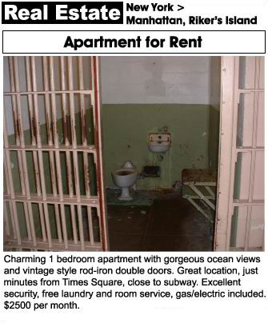

| #scuba
| #scuba  | #travel
| #travel  | #nyc
| #nyc 
Monday, November 9th, 2015
Class Methods
Welcome to this week's tutorial. As always, I like to use real life analogies to get my point across. Today we are talking about class methods in Ruby, in the context of apartment hunting on Craigslist. If any of you have had the displeasure to doing this before, you'll know that these apartments often fall very short from how they were described in the ad, but you already knew this when you decided to search on Craigslist. If you wanted honesty, there are plenty of more dignified sites like StreetEasy and Naked Apartments, but you couldn't help at least glance at Craigslist, searching for that rare gem of a deal that one of your friends told you she got. Never mind that that was back in 2004 Bushwick when pizza delivery guys were getting slammed in the back of the head with 2x4's for tip money and if you worked in the city, you'd need to own a kayak beacsue the L train was so unreliable.
With the fierce competition in a market like NYC, agents need to post ads on just about every real estate site available, as many as 30 times a day. From a programmer's perspective, these agents could really benefit from using a method to generate ads quickly over and over again. The problem with coding something like this though, is that each site has a different tone and feel to it, so if we wrote an ad generator that would work for Naked Apartments, it might not necessarily for for a site like Craigslist. We would have to make a different template for each site. That's where we would use a class method.
A class is essentially a blue print for writing methods that we intend to use over and over again. Since our Craigslist ads are posted in real time, they will need to have a more exagerated headline as opposed to Naked Apartments' more modest ones. For example, a Naked Apartments headline that reads, "Bright, Roomy 2 Bed off the Myrtle-Wyckoff L/M" might be adapted for Craigslist to read "Sun-drenched, Massive 2 Bed, Steps to Jefferson L!!!!"

So since we know that our Craigslist ads need to be a bit more over the top, let's write a class that takes the facts about the apartment, and makes them sound much more appealing to the apartment-hunter.
First, let's define a class called "CraigslistApt." It's imprtant to note that class names should always begin with an uppercase letter and written in "camelcase," meaning that if there is a second word appended to the first word in the class name, that second word will start with a capital letter as well, thus mimicking the image of a camel's humps.
class CraigslistApt def initialize(neighborhood, sq_ft, bedrooms, price) @neighborhood = neighborhood @sq_ft = sq_ft @bedrooms = bedrooms @price = price end end
In the first method, "initialize," we declared "bedrooms" and "sq_ft" to be instance variables, which will allow us to use the values assigned to them in a different method within the same class. In the method, "size," we are using these values to calculate how big each bedroom is, and automatically generate a word to describe the apartment accordingly. If we did not use the @ symbol, we would not be able to access the values established in "initialize."
Now that we've declared our instance variables and can access them from anywhere in the class, let's use them to manipulate the data. We'll start by creating a method called "size" which will generate a descriptive term based on the square footage.
class CraigslistApt def initialize(neighborhood, sq_ft, bedrooms, price) @neighborhood = neighborhood @sq_ft = sq_ft @bedrooms = bedrooms @price = price end def size if @sq_ft / @bedrooms < 80 @description = "Cozy" elsif @sq_ft / @bedrooms < 100 @description = "Spacious" elsif @sq_ft / @bedrooms < 120 @description = "Massive" else @description = "OPTIMUS PRIME-SIZED" end end end
In the second block of code, above, I've created an if/else conditional statement that sets a new instance variable, "@description" to a different string to describe the apartment size, depending on the size of each bedroom. If you're wondering why I haven't accounted for a common room, it's because you know it'll just get AirBnB'd out for tenants to afford rent and not actually be considered part of the living space. We are doing this so that later in our class, we can output a string using these new instance variables, that will become a gripping Craigslist ad headline.
Using my old apartment (222 Wilson Ave.), if we want to create a new object in this class, we would do the following:
wilson_222 = CraigslistAd.new('Bushwick', 800, 2, 3000)
wilson_222.size
It should be noted that technically you do not need to do something with every argument passed to a class but you do need to make sure a parameter is declared for it. For example, we assigned the following parameters to this class upon initialization:
(neighborhood, sq_ft, bedrooms, price)
But at this point, we are only working with "sq_ft" and "bedrooms."
def size if @sq_ft / @bedrooms < 80 @description = "Cozy" elsif @sq_ft / @bedrooms < 100 @description = "Spacious" elsif @sq_ft / @bedrooms < 120 @description = "Massive" else @description = "OPTIMUS PRIME-SIZED" end end
The above block of code will not output anyting when we call it because we are simply creating a new instance variable based on square feet divided by number of bedrooms. If we want to generate our headline and output a string, we need to do a few more things. For the sake of accounting for every feature we've passed to this class as an argument, let's do something with every instance variable.
class CraigslistApt
def initialize(neighborhood, sq_ft, bedrooms, price)
@neighborhood = neighborhood
@sq_ft = sq_ft
@bedrooms = bedrooms
@price = price
end
def size
if @sq_ft / @bedrooms < 80
@description = "Cozy"
elsif @sq_ft / @bedrooms < 100
@description = "Spacious"
elsif @sq_ft / @bedrooms < 120
@description = "Massive"
else
@description = "OPTIMUS PRIME-SIZED"
end
end
end
def rent
if @price / @bedrooms <= 1500
@affordability = "STUPID CHEAP"
elsif @price <= 2000
@affordability = "Affordable"
else
@affordability = "Liz Taylor Luxurious"
end
end
def location
if @neighborhood == "Williamsburg"
@fantasy_neighborhood = "Prime Williamsburg!"
elsif @neighborhood == "Bushwick"
@fantasy_neighborhood = "Williamsburg"
elsif @neighborhood == "East New York"
@fantasy_neighborhood = "Bushwick"
elsif @neighborhood =="Bedstuy"
@fantasy_neighborhood = "Bushwick"
elsif @neighborhood == "Crown Heights"
@fantasy_neighborhood = "Park Slope"
else
@fantasy_neighborhood = "Up and coming neighborhood! Lot's of artists and musicians!"
end
end
def ad
puts "#{@description} #{@affordability} #{@bedrooms} Bed #{@fantasy_neighborhood} Apartment. WON'T LAST!!!!"
end
end
Now let's call the method again, and get it to print the "ad." Since the instance variables being referenced in the ad method require other methods within the class to run first, we need to call all of them like this:
wilson_222.size wilson_222.rent wilson_222.location wilson_222.ad
And our output, based on a 600 square foot, 2 bedroom apartment in Bushwick for $3000/month would be:
"OPTIMUS PRIME-SIZED STUPID CHEAP 2 Bed Williamsburg Apartment. WON'T LAST!!!!"
Hopefully this tutorial wasn't too confusing. I have to admit, I got a little carried away with poking fun at New York real estate and will probably turn this into a Javascript project at some point which will actually help NYC n00bs decode Craigslist apartment ad buzz words, but for now, it's time for me to move on to other projects! :)